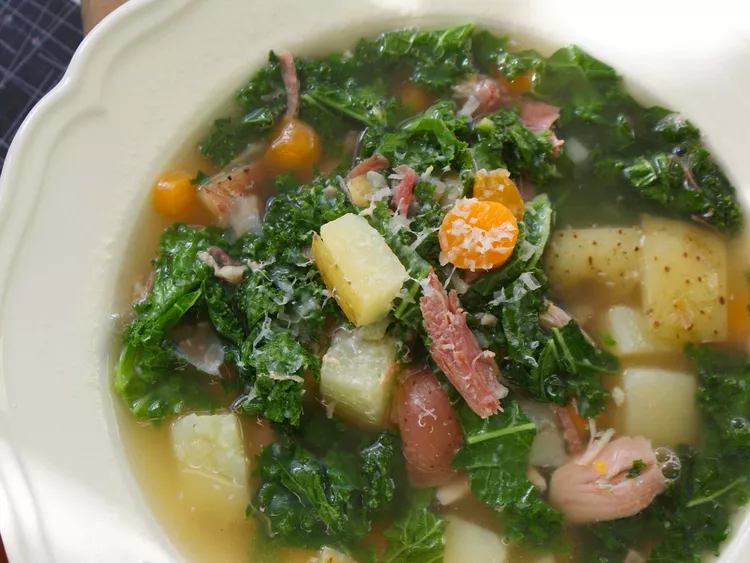

Easy Portuguese Kale Soup

Description
An easy and delicious Portuguese soup recipe that will impress your family and friends. This recipe has a spin on it by using kielbasa instead of linguica sausage. My fiancé cannot get enough of this dish!
Ingredients
- 2 tablespoons olive oil
- 1 onion, chopped
- 3 cloves garlic, chopped
- 1 (16 ounce) package kielbasa (Polish) sausage, diced
- 3 potatoes, cut into cubes
- 1 tablespoon salt
- 1 tablespoon ground black pepper
- 2 (14.5 ounce) cans chicken broth
- 1 cup water
- 1 (15 ounce) can red kidney beans, drained and rinsed
- 3 carrots, chopped
- 1 bunch kale, cut into thin ribbons
- 1 cup small elbow macaroni
- 6 tablespoons grated Parmesan cheese, or to taste (Optional)
Steps
- Heat olive oil in a stock pot over medium heat. Cook and stir onion and garlic in the hot oil until fragrant, about 1 minute. Add kielbasa; cook and stir until browned, about 5 minutes. Stir potatoes into kielbasa mixture, season with salt and pepper, and continue to cook and until the potatoes begin to brown, about 2 minutes.
- Pour chicken broth and water into the stock pot; add kidney beans, carrots, and kale. Bring the mixture to a boil, then reduce heat to medium-low; simmer soup for 45 minutes.
- Stir macaroni into the soup; continue cooking until the macaroni is tender yet firm to the bite, about 15 minutes more. Top each bowl with 1 tablespoon Parmesan cheese to serve.
Home